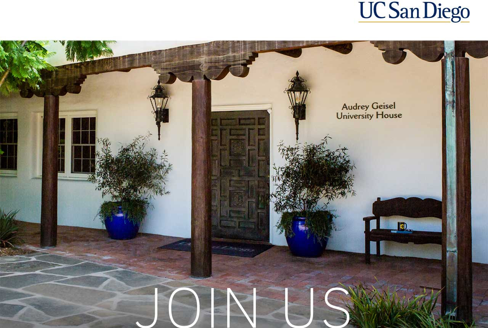
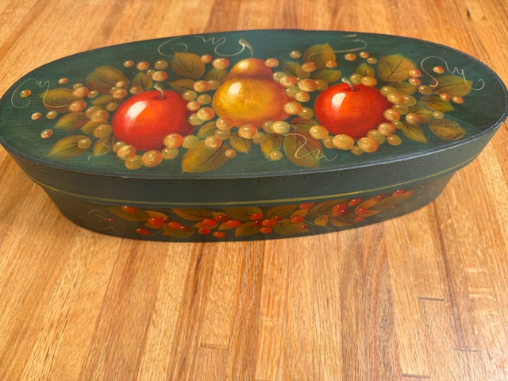
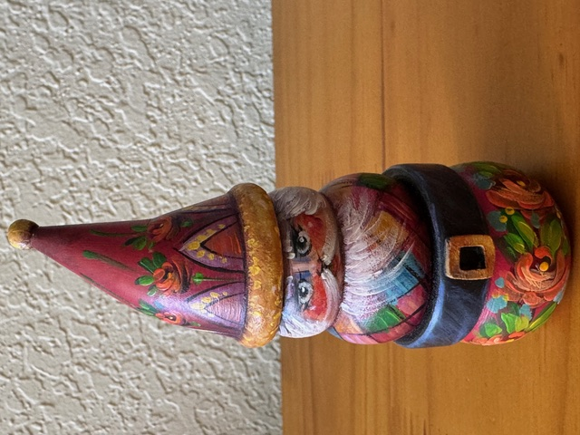
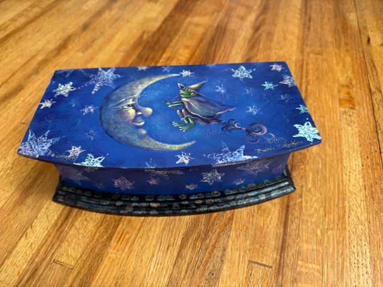
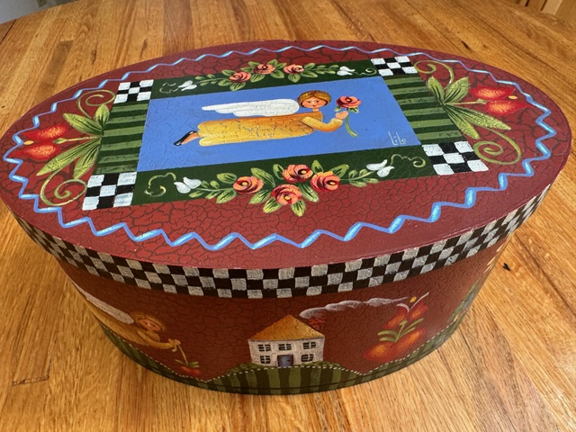
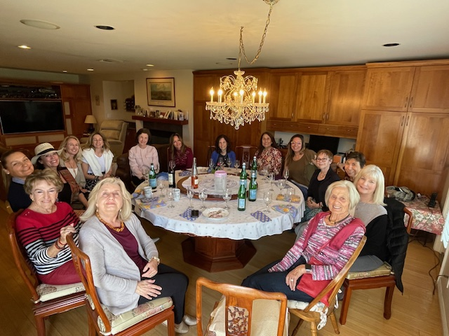
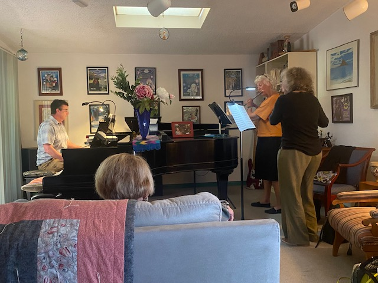
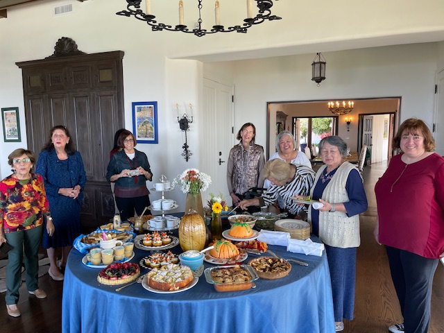
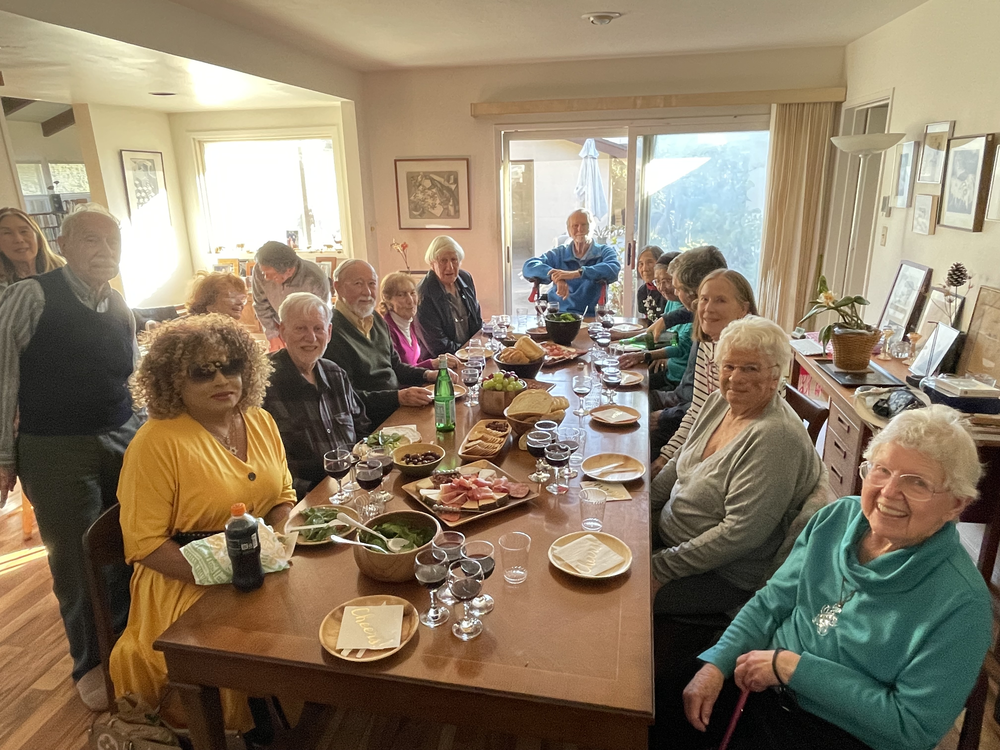
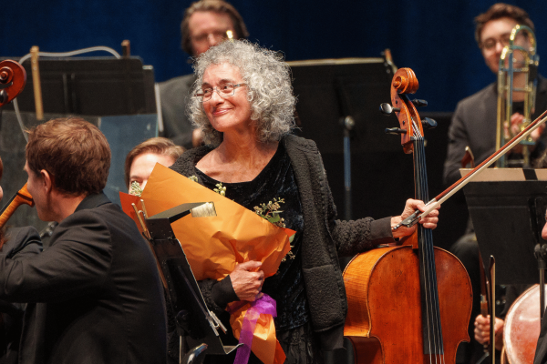

-
View our newest Newsletter here!!!
-
Our Mailing Address
We are consolidating our mailboxes with the Internatiional Services and Engagement Office, ISEO. All mail should now be addressed as follows (except when otherwise stated)
Oceanids
c/o Global Initiatives, ISEO
Triton Administrative Services
9500 Gilman Drive, #0030
La Jolla, CA 92093
Who Are We?
Oceanids is a University of California, San Diego organization and support group promoting friendship and services to the UC San Diego community. Oceanids is open to all who are interested in UC San Diego as well as faculty, staff and active members of campus support groups and their spouses. In particular, we shall:
-
Welcome and assist newcomers and visitors to the University campus and community
-
Fund fellowships and undergraduate awards recognizing scholarship and service
-
Sponsor interest groups to promote fellowship and strengthen the academic community
Oceanids service activities include: Undergraduate service awards, graduate fellowships and other service projects. The Newcomers group welcomes and assists new members to the UC San Diego community throughout the academic year. For more information on Newcomers, contact Liz Wills, (858) 454-6858.
Our annual events include: Fall Welcome Lunch, Whale Watching, Campus Focus, and Spring Luncheon, just to mention a few.
Interest Groups are the backbone of our Oceanids organization. They are here to meet the many varied needs of our UC San Diego families. If you are interested in book clubs, bird watching, practicing your French or German, wine tasting, playing bridge, join us. For a more complete list and description of our groups, click on Interest Groups.
Join!
If you are a University scholar, researcher, staff member, visiting guest of the University or a person interested in being part of a vibrant University community, you are invited to join us. For more information, please contact oceanids@ucsd.edu, or download a membership application , or renewal application and/or a donation form.
Renewing Members
If you would like to renew your Oceanids membership, download a renewal membership form and follow the instructions listed on the form.
President's Message

It’s fitting that our Oceanids “year” corresponds with the academic year. It’s a good idea for those of us who are fortunate to be active in one or more of our dynamic interest groups to remember that Oceanids is above all a UC San Diego Support Group. At our Fall Brunch on November 7 we will recognize our deserving Undergraduate Service Award recipients. In the Spring we have the opportunity to hear from our graduate fellows. At a time when there is plenty to feel anxious about, it’s reassuring to meet these impressive scholars who will guide our future. One of the reasons I enjoy being a leader in the organization is because we work so well together. Needless to say, it’s been a pleasure serving with Co-President Liz Winant. I’ve served on other boards, and those experiences have generally been positive. However, I believe Oceanids is unique in how well we get along, support each other and enjoy each other’s company. Kudos to all of our members who keep this unique organization running smoothly. Please know how much you are valued!
As Co-President of Oceanids, my message will come next month.
Liz Winant
Special Announcements
*******************************************************************************

Oceanids'
Fall Membership Brunch
Saturday, November 7, 2026
Audrey Geisel University House
11am - 1:30pm
Invitations will be sent to members via email
RSVP by October 28th
If you have not received your invitation by October 26th, please contact Chris Chase
Carpooling recommended, complimentary valet parking available
*******************************************************************************
Oceanids Elected Officers
2026-2027
| Co-Presidents | Mary Hanson and Liz Winant | ||
| Immediate Past President | Jim Bunch | ||
| Co-Vice Presidents | Chris Chase, Diana Vines | ||
| Second Vice President | Mary Cutchin | ||
| Recording Secretary | Janet Ambrozek | ||
| Treasurer | Jim Bunch | ||
| Financial Secretary | Liz Winant | ||
| Nominating Committee |
Anne-France Saillot (cont), Paulette Boher, Elisabeth Smith, Helen Lesnick (alt), Jan Ouren, Janet Ambrozek |
*******************************************************************************
Your help to Oceanids is appreciated!
(Student Letters received from support from the Oceanids Emergency Fund)
| Dear Oceanids Board,
I’m writing to confirm receipt of the Oceanids Emergency Fund and to express my sincere gratitude for your support. The $1,500 assistance directly helped us recover from fire-related expenses, allowing us to cover a significant portion of the outstanding liability. This support meaningfully eased both the financial and mental burden on my family at a time when we were stretched thin. Beyond the immediate financial relief, the Fund was a beacon of hope during a very difficult period. Knowing that the UCSD community stood with us made a profound difference. I am especially grateful to ISEO and to you, Grace, for your patient, empathetic guidance since February--your responsiveness and understanding carried us through the logistics and the stress. Thanks to Oceanids, we were able to focus on stability—returning to coursework, research, and daily life—without the constant worry of how to bridge the gap. I deeply appreciate the compassion and care behind this program and the generosity of everyone who contributes to it. Please feel free to share this letter with the Oceanids’ Board. If any further information would be helpful, I’m happy to provide it. With heartfelt thanks, (Name withheld) Computer Science and Engineering |
Dear Oceanids Board, Members, I am writing to express my heartfelt gratitude for your generous support through the Oceanids Emergency Fund. I received an award of $1,500 (approximately $1,290 after taxes), which came at a time when I was facing significant financial and emotional stress. As an international graduate student pursuing my studies on an education loan, I experienced an unexpected accident at my UCSD graduate housing that led to additional expenses. The financial burden from this incident was difficult to manage alongside the academic and research responsibilities of graduate life. Receiving this support from Oceanids helped me pay a portion of those housing-related charges and brought immediate relief from the financial pressure I was under. Beyond the monetary help, this assistance truly lightened my mental load. It allowed me to focus again on my coursework, research, and overall well-being without the constant worry of how to make ends meet. Knowing that there is a community at UCSD that genuinely cares about students in times of hardship means more than words can convey. Thank you once again for your generosity
and compassion. Your kindness made a real difference in my life,
and I will always remain grateful for the support you provided
during a challenging time. With sincere appreciation, (Name withheld] Graduate Student, Department of Science and
Engineering University of California, San Diego |
Dear Oceanids, I am writing to express my deepest
gratitude for awarding me the grant of $6,172 through the
Oceanids Emergency Fund. At a time of immense personal and
financial hardship, your generous support means I will be able
to successfully complete my Masters degree program at UC San
Diego this June as planned. Due to the recent and unexpected
death of my grandmother abroad combined with ongoing family
legal matters, I was facing severe financial strain without
means to cover my housing and living costs for the final term.
Thanks to your assistance, I now have the security and peace of
mind to focus solely on my studies without added stress over
basic needs being met. Knowing I will graduate on schedule and
begin a new chapter thereafter brings me immense relief and joy.
I am so thankful to the Oceanids board for recognizing my
situation and helping me continue my education through these
difficulties. Your compassion will forever be remembered. Sincerely, (name withheld)
|
*******************************************************************************
*******************************************************************************
Member Alert!
Oceanids'Upcycle Show
at Ocenaids Virtual Gallery of Arts and Crafts
Now Feature in Oceanids News (p.4 -6)
*******************************************************************************
Gallery of Arts and Crafts
As our Oceanids' membership includes many artists, we are offering Oceanids members an opportunity to show and share their creations. We encourage you to submit one of your art works, along with a short bio of yourself, to be published in our newsletter--available online to members and the public.As our Oceanids' membership includes many artists, we are offering Oceanids members an opportunity to show and share their creations. We encourage you to submit one of your art works, along with a short bio of yourself, to be published in our newsletter--available online to members and the public.
To exhibit your work, please send a .jpg of your work and a short bio to
Jan.
Our last gallery featured Barbara Bank and her decorative folk art tole painting. You can see the article the Newsletter on pages 4 & 5.




If you have a collection or interest you would like to share, please contact Jan. We would love to hear about it!
*******************************************************************************
Join Our Oceanids Interest Groups


Cafe Francais Piano Soiree


Tapas Wine Tasting
+ Many More
See Newsletter for more information
*******************************************************************************
Our new link to registering your Oceanids events is:
https://events.campuscoverage.com/programs/uc/ucsd/fas/application
For more information on registration, please visit our Links page
*******************************************************************************New Spotlight
Meet and Greet
Marcia Bookstein
Cellist

Read about Marcia in January's Newsletter
*******************************************************************************
Volunteer Opportunity
UCSD International Students and Programs Office's
English-in-Action (EIA) Program
Conversation Program is looking for volunteers who will enjoy meeting with an international student, scholar or spouse for 1-2 hours on a weekly basis to assist them in improving their English conversation skills and to share our American culture. Participating in EIA is provides considerable cultural insight and a deeper appreciation for diversity which helps students gain a greater respect and appreciation for other cultures. No knowledge of foreign languages or teaching experience is required. EIA volunteers attend an orientation session and have access to the materials and resources of the International Students & Programs Office. Conversation leaders can work with participants individually or in small groups and typically meet for 1-2 hours/week at a location that is convenient for both, including remote meetings, on campus or off campus.
Please visit
http://bit.ly/EIATutorExperiences to hear what current and past
volunteers have shared about their experiences with EIA.
To apply or for more information, please visit
our website:
eia.ucsd.edu Questions? Please email Shelly Taskin at eia@ucsd.edu
*******************************************************************************
UCSD Art Power
Music, Dance, Special Events
For more information, visit
*******************************************************************************
*******************************************************************************
For questions regarding the website, please contact Mary Woo, mwoonew@gmail.com